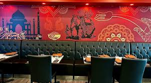
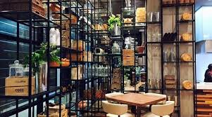

Discover Nearby
Top Rated Restaurants Around You 🍴
Find the best food spots nearby, handpicked for taste, quality, and service.

Spice Affair
Authentic Indian Cuisine
4.7 | 1.2 km away

Urban Eatery
Modern Café & Grill
4.6 | 0.8 km away

Sushi Haven
Fresh Japanese Rolls
4.8 | 1.5 km away